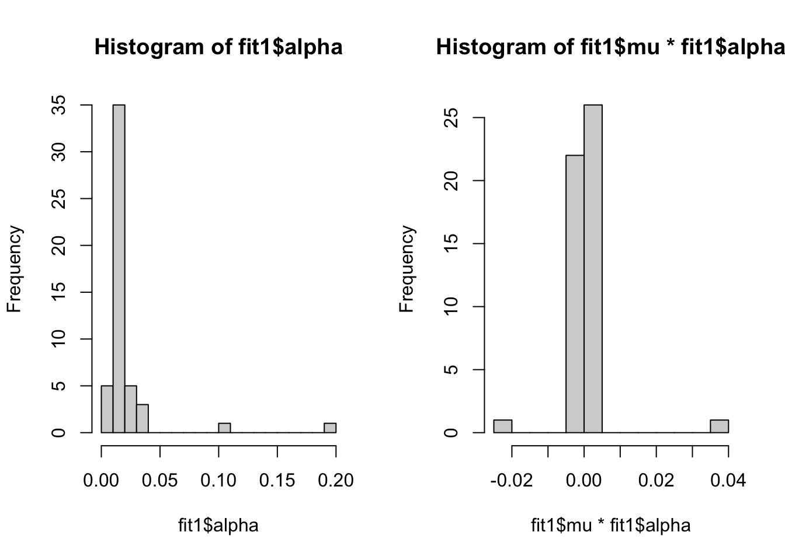

Apply SER module
Yunqi Yang
2/5/2023
Last updated: 2023-05-04
Checks: 7 0
Knit directory: survival-susie/
This reproducible R Markdown analysis was created with workflowr (version 1.6.2). The Checks tab describes the reproducibility checks that were applied when the results were created. The Past versions tab lists the development history.
Great! Since the R Markdown file has been committed to the Git repository, you know the exact version of the code that produced these results.
Great job! The global environment was empty. Objects defined in the global environment can affect the analysis in your R Markdown file in unknown ways. For reproduciblity it’s best to always run the code in an empty environment.
The command set.seed(20230201) was run prior to running the code in the R Markdown file. Setting a seed ensures that any results that rely on randomness, e.g. subsampling or permutations, are reproducible.
Great job! Recording the operating system, R version, and package versions is critical for reproducibility.
Nice! There were no cached chunks for this analysis, so you can be confident that you successfully produced the results during this run.
Great job! Using relative paths to the files within your workflowr project makes it easier to run your code on other machines.
Great! You are using Git for version control. Tracking code development and connecting the code version to the results is critical for reproducibility.
The results in this page were generated with repository version 0ed566d. See the Past versions tab to see a history of the changes made to the R Markdown and HTML files.
Note that you need to be careful to ensure that all relevant files for the analysis have been committed to Git prior to generating the results (you can use wflow_publish or wflow_git_commit). workflowr only checks the R Markdown file, but you know if there are other scripts or data files that it depends on. Below is the status of the Git repository when the results were generated:
Ignored files:
Ignored: .DS_Store
Ignored: .Rhistory
Ignored: .Rproj.user/
Ignored: analysis/.DS_Store
Ignored: analysis/.RData
Ignored: analysis/.Rhistory
Ignored: data/.DS_Store
Untracked files:
Untracked: analysis/ibss_null_model.Rmd
Untracked: data/dsc3/
Unstaged changes:
Modified: analysis/check_coxph_fit.Rmd
Modified: analysis/compare_power_fdr.Rmd
Deleted: analysis/null_model_demo.Rmd
Modified: analysis/null_model_zscore.Rmd
Deleted: analysis/one_predictor_investigation.Rmd
Deleted: analysis/ser_survival.Rmd
Modified: analysis/sim_survival_with_censoring.Rmd
Modified: analysis/susie_poor_performance_example.Rmd
Modified: code/VI_exponential.R
Modified: code/surv_susie_helper.R
Note that any generated files, e.g. HTML, png, CSS, etc., are not included in this status report because it is ok for generated content to have uncommitted changes.
These are the previous versions of the repository in which changes were made to the R Markdown (analysis/run_ser_simple_dat.Rmd) and HTML (docs/run_ser_simple_dat.html) files. If you’ve configured a remote Git repository (see ?wflow_git_remote), click on the hyperlinks in the table below to view the files as they were in that past version.
| File | Version | Author | Date | Message |
|---|---|---|---|---|
| Rmd | 0ed566d | yunqiyang0215 | 2023-05-04 | wflow_publish("analysis/run_ser_simple_dat.Rmd") |
| html | ea24571 | yunqiyang0215 | 2023-04-14 | Build site. |
| Rmd | b94af8b | yunqiyang0215 | 2023-04-14 | wflow_publish("analysis/run_ser_simple_dat.Rmd") |
| html | fa52731 | yunqiyang0215 | 2023-03-15 | Build site. |
| Rmd | 4631138 | yunqiyang0215 | 2023-03-15 | wflow_publish("analysis/run_ser_simple_dat.Rmd") |
| html | aef86a7 | yunqiyang0215 | 2023-02-23 | Build site. |
| Rmd | 8fceddd | yunqiyang0215 | 2023-02-23 | wflow_publish("analysis/run_ser_simple_dat.Rmd") |
| html | 7fc8ac9 | yunqiyang0215 | 2023-02-23 | Build site. |
| Rmd | 26f177f | yunqiyang0215 | 2023-02-23 | wflow_publish("analysis/run_ser_simple_dat.Rmd") |
| html | 86471c9 | yunqiyang0215 | 2023-02-21 | Build site. |
| html | 2edb747 | yunqiyang0215 | 2023-02-21 | Build site. |
| Rmd | 91d4fb7 | yunqiyang0215 | 2023-02-21 | wflow_publish("analysis/run_ser_simple_dat.Rmd") |
| html | babbca4 | yunqiyang0215 | 2023-02-21 | Build site. |
| Rmd | eecfb7f | yunqiyang0215 | 2023-02-21 | wflow_publish("analysis/run_ser_simple_dat.Rmd") |
| html | 7a533c6 | yunqiyang0215 | 2023-02-21 | Build site. |
| Rmd | afa4e95 | yunqiyang0215 | 2023-02-21 | wflow_publish("analysis/run_ser_simple_dat.Rmd") |
| html | 69498d8 | yunqiyang0215 | 2023-02-16 | Build site. |
| Rmd | 7f7cab7 | yunqiyang0215 | 2023-02-16 | wflow_publish("analysis/run_ser_simple_dat.Rmd") |
| html | 8f08853 | yunqiyang0215 | 2023-02-15 | Build site. |
| Rmd | 0b9d885 | yunqiyang0215 | 2023-02-15 | wflow_publish("analysis/run_ser_simple_dat.Rmd") |
| html | fa55cee | yunqiyang0215 | 2023-02-15 | Build site. |
| Rmd | 2aab4d2 | yunqiyang0215 | 2023-02-15 | wflow_publish("analysis/run_ser_simple_dat.Rmd") |
| html | 973f023 | yunqiyang0215 | 2023-02-13 | Build site. |
| Rmd | cfd4df5 | yunqiyang0215 | 2023-02-13 | wflow_publish("analysis/run_ser_simple_dat.Rmd") |
| html | b407f93 | yunqiyang0215 | 2023-02-12 | Build site. |
| Rmd | 4f242bd | yunqiyang0215 | 2023-02-12 | wflow_publish("analysis/run_ser_simple_dat.Rmd") |
| html | d7a14e4 | yunqiyang0215 | 2023-02-12 | Build site. |
| Rmd | a70c34c | yunqiyang0215 | 2023-02-12 | wflow_publish("analysis/run_ser_simple_dat.Rmd") |
| html | d16db2f | yunqiyang0215 | 2023-02-12 | Build site. |
| Rmd | 4910cfc | yunqiyang0215 | 2023-02-12 | wflow_publish("analysis/run_ser_simple_dat.Rmd") |
| html | 9d83f72 | yunqiyang0215 | 2023-02-12 | Build site. |
| Rmd | 55b418b | yunqiyang0215 | 2023-02-12 | wflow_publish("analysis/run_ser_simple_dat.Rmd") |
| html | b67c343 | yunqiyang0215 | 2023-02-09 | Build site. |
| Rmd | b2b3b99 | yunqiyang0215 | 2023-02-09 | wflow_publish("analysis/run_ser_simple_dat.Rmd") |
| html | 210cf66 | yunqiyang0215 | 2023-02-09 | Build site. |
| Rmd | 2360f30 | yunqiyang0215 | 2023-02-09 | wflow_publish("analysis/run_ser_simple_dat.Rmd") |
| html | cc386a1 | yunqiyang0215 | 2023-02-09 | Build site. |
| Rmd | 4f1c5c3 | yunqiyang0215 | 2023-02-09 | wflow_publish("analysis/run_ser_simple_dat.Rmd") |
| html | ba5113f | yunqiyang0215 | 2023-02-09 | Build site. |
| Rmd | 4e06f27 | yunqiyang0215 | 2023-02-09 | wflow_publish("analysis/run_ser_simple_dat.Rmd") |
Description:
I simulated data in 5 different scenarios, and apply both coxph model and susie procedure. The data simulation procedure is available at https://yunqiyang0215.github.io/survival-susie/sim_survival.html.
Here I use corrected ABF instead of original Wakefeld ABF.
The Wakefield approximation:
\[ ABF(H_1/H_0)=\sqrt\frac{V}{V+W}\exp\{\frac{z^2}{2}\frac{W}{V+W}\}, \] where \(V\) is the variance of estimated regression coefficient, and \(W\) is variance in the normal prior, \(N(0,W)\).
# Function to calculate log of approximate BF based on Wakefield approximation
# @param z: zscore of the regression coefficient
# @param s: standard deviation of the estimated coefficient
compute_lbf <- function(z, s, prior_variance){
abf <- sqrt(s^2/(s^2+prior_variance))
lbf <- log(sqrt(s^2/(s^2+prior_variance))) + z^2/2*(prior_variance/(s^2+prior_variance))
return(lbf)
}
compute_approx_post_var <- function(z, s, prior_variance){
post_var <- 1/(1/s^2 + 1/prior_variance)
return(post_var)
}
# @param post_var: posterior variance
# @param s: standard deviation of the estimated coefficient
# @param bhat: estimated beta effect
compute_approx_post_mean <- function(post_var, s, bhat){
mu <- post_var/(s^2)*bhat
return(mu)
}dat = readRDS("./data/sim_dat_simple.rds")
library(survival)
# Modified Karl's code for intercept part
devtools::load_all("/Users/nicholeyang/Desktop/logisticsusie")ℹ Loading logisticsusiesurv_uni_fun <- function(x, y, o, prior_variance, estimate_intercept = 0, ...){
fit <- coxph(y~ x + offset(o))
bhat <- summary(fit)$coefficients[1, 1] # bhat = -alphahat
sd <- summary(fit)$coefficients[1, 3]
zscore <- bhat/sd
lbf <- compute_lbf(zscore, sd, prior_variance)
lbf.corr <- lbf - bhat^2/sd^2/2+ summary(fit)$logtest[1]/2
var <- compute_approx_post_var(zscore, sd, prior_variance)
mu <- compute_approx_post_mean(var, sd, bhat)
return(list(mu = mu, var=var, lbf=lbf.corr, intercept=0))
}
fit_coxph <- ser_from_univariate(surv_uni_fun)Data 1: simulated from null model with X independent
\(\log T_i =\beta_0+\epsilon_i\) and \(\beta_0 = 1\).
## Create survival object. status == 2 is death
dat[[1]]$y <- with(dat[[1]], Surv(surT, status == 2))
# Fit cox ph. Cox ph model with select multiple significant predictors..
cox1 <- coxph(y ~ .-status - surT, data = dat[[1]])Run IBSS on data from null model with L=1.
p = 50
X = as.matrix(dat[[1]][, c(2:(p+1))])
y = dat[[1]]$y# IBSS of susie
set.seed(1)
fit1 <- ibss_from_ser(X, y, L = 1, prior_variance = 1., prior_weights = rep(1/p, p), tol = 1e-3, maxit = 500, estimate_intercept = TRUE, ser_function = fit_coxph)1.791 sec elapsedpar(mfrow = c(1,2))
hist(fit1$alpha, breaks = 20)
hist(fit1$mu* fit1$alpha, breaks = 20)
Run IBSS on data from null model, L = 5.
# IBSS of susie
t1 <- proc.time()
fit2 <- ibss_from_ser(X, y, L = 5, prior_variance = 1., prior_weights = rep(1/p, p), tol = 1e-3, maxit = 500, estimate_intercept = TRUE, ser_function = fit_coxph)8.951 sec elapsedt2 <- proc.time()
t(apply(fit2$alpha, 1, function(x) sort(x, decreasing = TRUE))) [,1] [,2] [,3] [,4] [,5] [,6]
[1,] 0.06368851 0.04802958 0.02913436 0.02796950 0.02618090 0.02466443
[2,] 0.06047537 0.04590021 0.02871672 0.02765142 0.02579570 0.02452988
[3,] 0.06006763 0.04558375 0.02865655 0.02759997 0.02573326 0.02450743
[4,] 0.05989448 0.04542096 0.02862764 0.02757228 0.02569902 0.02449542
[5,] 0.05974755 0.04527704 0.02860237 0.02754755 0.02566839 0.02448468
[,7] [,8] [,9] [,10] [,11] [,12]
[1,] 0.02397859 0.02345858 0.02285416 0.02224116 0.02194645 0.02151051
[2,] 0.02380903 0.02341834 0.02272439 0.02218136 0.02190995 0.02148081
[3,] 0.02378181 0.02340480 0.02270128 0.02217108 0.02190746 0.02146982
[4,] 0.02376735 0.02339450 0.02268770 0.02216548 0.02190815 0.02146104
[5,] 0.02375446 0.02338477 0.02267542 0.02216046 0.02190907 0.02145273
[,13] [,14] [,15] [,16] [,17] [,18]
[1,] 0.02064813 0.02025334 0.01992059 0.01888059 0.01866199 0.01865506
[2,] 0.02071544 0.02031118 0.01998635 0.01899466 0.01877445 0.01875909
[3,] 0.02071885 0.02031735 0.01999636 0.01900992 0.01878766 0.01877487
[4,] 0.02071748 0.02031955 0.02000180 0.01901697 0.01879263 0.01878317
[5,] 0.02071572 0.02032131 0.02000665 0.01902306 0.01879672 0.01879055
[,19] [,20] [,21] [,22] [,23] [,24]
[1,] 0.01826220 0.01818305 0.01808749 0.01798445 0.01768478 0.01755945
[2,] 0.01840019 0.01830835 0.01822728 0.01814709 0.01784869 0.01774461
[3,] 0.01841640 0.01832324 0.01824642 0.01816889 0.01786961 0.01777124
[4,] 0.01842249 0.01832891 0.01825538 0.01817885 0.01787849 0.01778436
[5,] 0.01842750 0.01833359 0.01826314 0.01818744 0.01788603 0.01779586
[,25] [,26] [,27] [,28] [,29] [,30]
[1,] 0.01743423 0.01719726 0.01719235 0.01680875 0.01675892 0.01659271
[2,] 0.01760102 0.01737357 0.01736935 0.01700166 0.01695079 0.01679251
[3,] 0.01762538 0.01739995 0.01739286 0.01702923 0.01697788 0.01682137
[4,] 0.01763758 0.01741310 0.01740373 0.01704266 0.01699089 0.01683556
[5,] 0.01764833 0.01742466 0.01741313 0.01705441 0.01700223 0.01684801
[,31] [,32] [,33] [,34] [,35] [,36]
[1,] 0.01656479 0.01647769 0.01640428 0.01639075 0.01629782 0.01628327
[2,] 0.01676407 0.01668004 0.01661294 0.01659867 0.01650864 0.01649537
[3,] 0.01679290 0.01670988 0.01664331 0.01662846 0.01653915 0.01652573
[4,] 0.01680710 0.01672488 0.01665838 0.01664297 0.01655416 0.01654049
[5,] 0.01681956 0.01673810 0.01667162 0.01665567 0.01656734 0.01655341
[,37] [,38] [,39] [,40] [,41] [,42]
[1,] 0.01620079 0.01614771 0.01603969 0.01599384 0.01590029 0.01585428
[2,] 0.01641860 0.01636489 0.01626341 0.01621718 0.01612495 0.01608277
[3,] 0.01644901 0.01639628 0.01629648 0.01624999 0.01615909 0.01611585
[4,] 0.01646337 0.01641170 0.01631313 0.01626639 0.01617675 0.01613211
[5,] 0.01647587 0.01642522 0.01632782 0.01628083 0.01619239 0.01614637
[,43] [,44] [,45] [,46] [,47] [,48]
[1,] 0.01574695 0.01558757 0.01550994 0.01533760 0.01528081 0.01527380
[2,] 0.01598098 0.01582239 0.01575005 0.01558145 0.01552650 0.01552149
[3,] 0.01601532 0.01585809 0.01578707 0.01561812 0.01556353 0.01555776
[4,] 0.01603245 0.01587653 0.01580646 0.01563683 0.01558247 0.01557576
[5,] 0.01604751 0.01589288 0.01582369 0.01565338 0.01559922 0.01559158
[,49] [,50]
[1,] 0.01517476 0.01511132
[2,] 0.01542345 0.01536270
[3,] 0.01546114 0.01540057
[4,] 0.01548052 0.01541992
[5,] 0.01549769 0.01543703beta <- colSums(fit2$alpha * fit2$mu)
pip <- logisticsusie:::get_pip(fit2$alpha)
pip [1] 0.09748285 0.07799943 0.09599781 0.07518383 0.07911623 0.07469998
[7] 0.13089440 0.10859316 0.11680743 0.09031150 0.20996861 0.10286113
[13] 0.07979130 0.09931725 0.08556686 0.08604348 0.07441235 0.07544199
[19] 0.12258281 0.08028092 0.07864310 0.08186057 0.08059893 0.07731492
[25] 0.08819061 0.08861001 0.07842552 0.07657791 0.10610624 0.08782141
[31] 0.08021170 0.13570771 0.07623986 0.08490666 0.08384156 0.09035850
[37] 0.11170651 0.07515363 0.08098953 0.08381612 0.09138866 0.07972689
[43] 0.26911978 0.08112200 0.08743763 0.11355168 0.07936132 0.08209964
[49] 0.10488200 0.07779130hist(beta, breaks = 20)
Data 2: simulated from null model with highly correlated X.
\(\log T_i =\beta_0+\epsilon_i\) and \(\beta_0 = 1\).
## Create survival object. status == 2 is death
dat[[2]]$y <- with(dat[[2]], Surv(surT, status == 2))
# Fit cox ph. Cox ph model with select multiple significant predictors..
cox1 <- coxph(y ~ .-status - surT, data = dat[[2]])Run IBSS on data from null model with L=1.
p = 50
X = as.matrix(dat[[2]][, c(2:(p+1))])
y = dat[[2]]$y# IBSS of susie
set.seed(1)
fit1 <- ibss_from_ser(X, y, L = 1, prior_variance = 1., prior_weights = rep(1/p, p), tol = 1e-3, maxit = 500, estimate_intercept = TRUE, ser_function = fit_coxph)0.921 sec elapsedpar(mfrow = c(1,2))
hist(fit1$alpha, breaks = 20)
hist(fit1$mu* fit1$alpha, breaks = 20)
Run IBSS on data from null model, L = 5.
# IBSS of susie
t1 <- proc.time()
fit2 <- ibss_from_ser(X, y, L = 5, prior_variance = 1., prior_weights = rep(1/p, p), tol = 1e-3, maxit = 500, estimate_intercept = TRUE, ser_function = fit_coxph)6.088 sec elapsedt2 <- proc.time()
t(apply(fit2$alpha, 1, function(x) sort(x, decreasing = TRUE))) [,1] [,2] [,3] [,4] [,5] [,6]
[1,] 0.02881676 0.02485934 0.02384393 0.02334564 0.02306719 0.02293221
[2,] 0.02462537 0.02260902 0.02201792 0.02177196 0.02154821 0.02153039
[3,] 0.02449712 0.02253777 0.02196273 0.02172522 0.02150021 0.02148359
[4,] 0.02441036 0.02248939 0.02192571 0.02169407 0.02146751 0.02145137
[5,] 0.02433602 0.02244796 0.02189397 0.02166738 0.02143942 0.02142371
[,7] [,8] [,9] [,10] [,11] [,12]
[1,] 0.02262641 0.02259612 0.02255042 0.02213961 0.02128135 0.02127131
[2,] 0.02135479 0.02134657 0.02134169 0.02109122 0.02064704 0.02064476
[3,] 0.02131475 0.02130899 0.02130106 0.02105802 0.02062942 0.02062551
[4,] 0.02128745 0.02128359 0.02127345 0.02103549 0.02061780 0.02061285
[5,] 0.02126401 0.02126183 0.02124973 0.02101611 0.02060782 0.02060197
[,13] [,14] [,15] [,16] [,17] [,18]
[1,] 0.02125440 0.02124881 0.02085620 0.02079462 0.02063354 0.02061058
[2,] 0.02064444 0.02064149 0.02042332 0.02042102 0.02034106 0.02031477
[3,] 0.02062366 0.02062180 0.02041314 0.02040960 0.02033073 0.02030756
[4,] 0.02060916 0.02060840 0.02040687 0.02040200 0.02032363 0.02030310
[5,] 0.02059688 0.02059668 0.02040151 0.02039548 0.02031751 0.02029931
[,19] [,20] [,21] [,22] [,23] [,24]
[1,] 0.02038459 0.01991267 0.01980673 0.01971735 0.01968219 0.01966548
[2,] 0.02017470 0.01994861 0.01992506 0.01984147 0.01979871 0.01979133
[3,] 0.02016826 0.01994977 0.01992614 0.01984597 0.01980357 0.01979833
[4,] 0.02016391 0.01995062 0.01992654 0.01984915 0.01980705 0.01980361
[5,] 0.02016016 0.01995134 0.01992685 0.01985189 0.01981003 0.01980817
[,25] [,26] [,27] [,28] [,29] [,30]
[1,] 0.01949482 0.01947690 0.01923563 0.01905372 0.01902366 0.01881856
[2,] 0.01973149 0.01967257 0.01957180 0.01950152 0.01946188 0.01936032
[3,] 0.01973923 0.01968204 0.01958415 0.01951478 0.01947653 0.01937898
[4,] 0.01974456 0.01968896 0.01959280 0.01952363 0.01948657 0.01939188
[5,] 0.01974914 0.01969493 0.01960024 0.01953120 0.01949519 0.01940298
[,31] [,32] [,33] [,34] [,35] [,36]
[1,] 0.01872413 0.01872002 0.01863835 0.01853535 0.01849969 0.01840709
[2,] 0.01935580 0.01929735 0.01927773 0.01921812 0.01920740 0.01917460
[3,] 0.01937359 0.01931772 0.01929865 0.01924092 0.01923014 0.01919797
[4,] 0.01938536 0.01933185 0.01931296 0.01925659 0.01924564 0.01921370
[5,] 0.01939543 0.01934401 0.01932525 0.01927005 0.01925894 0.01922719
[,37] [,38] [,39] [,40] [,41] [,42]
[1,] 0.01834207 0.01826280 0.01824219 0.01822804 0.01822594 0.01822192
[2,] 0.01913922 0.01912962 0.01910646 0.01909883 0.01907547 0.01901828
[3,] 0.01916326 0.01915454 0.01913184 0.01912446 0.01910196 0.01904707
[4,] 0.01917905 0.01917145 0.01914877 0.01914155 0.01911988 0.01906715
[5,] 0.01919253 0.01918597 0.01916328 0.01915619 0.01913525 0.01908445
[,43] [,44] [,45] [,46] [,47] [,48]
[1,] 0.01793771 0.01791748 0.01789232 0.01769225 0.01745322 0.01739444
[2,] 0.01900970 0.01890939 0.01884429 0.01877641 0.01870756 0.01870234
[3,] 0.01903763 0.01894086 0.01887819 0.01881171 0.01874460 0.01873949
[4,] 0.01905564 0.01896231 0.01890172 0.01883576 0.01876931 0.01876403
[5,] 0.01907099 0.01898073 0.01892200 0.01885643 0.01879047 0.01878504
[,49] [,50]
[1,] 0.01704101 0.01662323
[2,] 0.01861543 0.01824153
[3,] 0.01865508 0.01829168
[4,] 0.01868045 0.01832537
[5,] 0.01870207 0.01835430beta <- colSums(fit2$alpha * fit2$mu)
pip <- logisticsusie:::get_pip(fit2$alpha)
pip [1] 0.08910855 0.09503361 0.10326712 0.09271018 0.09384918 0.09186725
[7] 0.10545318 0.10320685 0.10978083 0.09139977 0.08839303 0.10418722
[13] 0.09239397 0.10191275 0.09953890 0.08957917 0.09581446 0.09325685
[19] 0.10437165 0.09144306 0.09831169 0.09525417 0.09443196 0.09166243
[25] 0.09704879 0.09126609 0.09787318 0.09506558 0.10324446 0.09122015
[31] 0.09194057 0.10676993 0.09028244 0.09950294 0.09777081 0.09953811
[37] 0.08666645 0.09562837 0.09342421 0.09465719 0.09838381 0.09224778
[43] 0.12043357 0.09260067 0.09953853 0.09061666 0.09001125 0.09114191
[49] 0.08903452 0.09094407hist(beta, breaks = 20)
Data 3: simulated from \(\log T_i=\beta_0 + \beta_1x_{i1}\). Predictors are independent.
\(\beta_0 = 1, \beta_1 = 3\)
dat[[3]]$y <- with(dat[[3]], Surv(surT, status == 2))
X = as.matrix(dat[[3]][, c(2:(p+1))])
y = dat[[3]]$y
# IBSS of susie
t1 <- proc.time()
fit3 <- ibss_from_ser(X, y, L = 5, prior_variance = 1., prior_weights = rep(1/p, p), tol = 1e-3, maxit = 500, estimate_intercept = TRUE, ser_function = fit_coxph)12.232 sec elapsedt2 <- proc.time()
t2 - t1 user system elapsed
11.973 0.162 12.235 fit3$alpha [,1] [,2] [,3] [,4] [,5]
[1,] 1.00000000 3.073730e-47 1.298948e-46 1.595314e-47 1.525453e-47
[2,] 0.01951114 1.658570e-02 2.395650e-02 1.673006e-02 1.803249e-02
[3,] 0.01950431 1.656358e-02 2.397881e-02 1.670870e-02 1.801632e-02
[4,] 0.01949572 1.653197e-02 2.401069e-02 1.667816e-02 1.799372e-02
[5,] 0.01948719 1.650150e-02 2.404134e-02 1.664872e-02 1.797177e-02
[,6] [,7] [,8] [,9] [,10]
[1,] 1.439780e-47 1.517504e-47 1.637731e-47 2.331776e-47 1.425913e-47
[2,] 1.713214e-02 2.301498e-02 1.915718e-02 2.070524e-02 1.967524e-02
[3,] 1.711372e-02 2.302971e-02 1.914827e-02 2.070528e-02 1.967269e-02
[4,] 1.708706e-02 2.305054e-02 1.913615e-02 2.070536e-02 1.966878e-02
[5,] 1.706141e-02 2.307047e-02 1.912429e-02 2.070532e-02 1.966503e-02
[,11] [,12] [,13] [,14] [,15]
[1,] 1.725218e-47 1.487990e-47 1.523747e-47 1.289493e-47 1.332745e-47
[2,] 3.422323e-02 1.818470e-02 1.733025e-02 3.101637e-02 1.584878e-02
[3,] 3.433157e-02 1.816977e-02 1.731171e-02 3.108579e-02 1.582422e-02
[4,] 3.449046e-02 1.814886e-02 1.728531e-02 3.118648e-02 1.578891e-02
[5,] 3.464350e-02 1.812856e-02 1.725982e-02 3.128294e-02 1.575496e-02
[,16] [,17] [,18] [,19] [,20]
[1,] 1.438722e-47 2.876329e-47 4.993311e-47 1.976118e-47 1.591846e-47
[2,] 1.805333e-02 1.633550e-02 1.676786e-02 1.842894e-02 1.695975e-02
[3,] 1.803682e-02 1.631263e-02 1.674674e-02 1.841812e-02 1.693934e-02
[4,] 1.801376e-02 1.627984e-02 1.671651e-02 1.840245e-02 1.691022e-02
[5,] 1.799135e-02 1.624827e-02 1.668738e-02 1.838735e-02 1.688212e-02
[,21] [,22] [,23] [,24] [,25]
[1,] 1.840754e-47 1.978865e-47 1.729242e-47 1.314026e-47 2.959457e-47
[2,] 1.849329e-02 1.744090e-02 1.853372e-02 1.683794e-02 1.786690e-02
[3,] 1.848252e-02 1.742258e-02 1.852281e-02 1.681637e-02 1.785056e-02
[4,] 1.846649e-02 1.739661e-02 1.850721e-02 1.678565e-02 1.782760e-02
[5,] 1.845109e-02 1.737151e-02 1.849212e-02 1.675600e-02 1.780536e-02
[,26] [,27] [,28] [,29] [,30]
[1,] 1.754919e-47 1.299432e-47 1.966159e-47 1.433306e-47 1.722858e-47
[2,] 1.842826e-02 1.644831e-02 1.940127e-02 2.054548e-02 1.733933e-02
[3,] 1.841425e-02 1.642575e-02 1.939566e-02 2.054727e-02 1.732056e-02
[4,] 1.839481e-02 1.639346e-02 1.938715e-02 2.054954e-02 1.729389e-02
[5,] 1.837589e-02 1.636236e-02 1.937895e-02 2.055170e-02 1.726813e-02
[,31] [,32] [,33] [,34] [,35]
[1,] 1.408407e-47 4.600677e-47 3.646996e-47 1.842043e-47 1.513775e-47
[2,] 1.698187e-02 2.441334e-02 1.871990e-02 1.794232e-02 2.166908e-02
[3,] 1.696154e-02 2.444330e-02 1.870904e-02 1.792683e-02 2.167734e-02
[4,] 1.693254e-02 2.448542e-02 1.869311e-02 1.790484e-02 2.168869e-02
[5,] 1.690457e-02 2.452609e-02 1.867769e-02 1.788356e-02 2.169958e-02
[,36] [,37] [,38] [,39] [,40]
[1,] 9.133164e-47 1.126210e-47 1.441175e-47 2.221720e-47 1.697772e-47
[2,] 1.980086e-02 1.653337e-02 1.884905e-02 1.744059e-02 1.806443e-02
[3,] 1.979326e-02 1.651083e-02 1.883538e-02 1.742231e-02 1.804915e-02
[4,] 1.978340e-02 1.647864e-02 1.881669e-02 1.739639e-02 1.802776e-02
[5,] 1.977361e-02 1.644762e-02 1.879839e-02 1.737134e-02 1.800701e-02
[,41] [,42] [,43] [,44] [,45]
[1,] 1.354994e-47 1.841670e-47 2.239157e-47 1.727746e-47 1.502923e-47
[2,] 1.956936e-02 1.697079e-02 4.390237e-02 1.682193e-02 2.611133e-02
[3,] 1.956454e-02 1.694983e-02 4.411027e-02 1.680081e-02 2.614739e-02
[4,] 1.955710e-02 1.692010e-02 4.439978e-02 1.677068e-02 2.619950e-02
[5,] 1.954992e-02 1.689138e-02 4.468211e-02 1.674162e-02 2.624941e-02
[,46] [,47] [,48] [,49] [,50]
[1,] 1.882920e-47 1.400435e-47 1.510961e-47 1.563912e-46 2.873710e-47
[2,] 2.981733e-02 1.697265e-02 2.111409e-02 2.183384e-02 1.748672e-02
[3,] 2.989799e-02 1.695177e-02 2.112033e-02 2.184331e-02 1.746831e-02
[4,] 3.001267e-02 1.692213e-02 2.112880e-02 2.185608e-02 1.744232e-02
[5,] 3.012363e-02 1.689351e-02 2.113695e-02 2.186842e-02 1.741717e-02beta <- colSums(fit3$alpha * fit3$mu)
pip <- logisticsusie:::get_pip(fit3$alpha)
pip [1] 1.00000000 0.06455824 0.09258720 0.06511255 0.07009277 0.06666008
[7] 0.08902890 0.07439542 0.08028426 0.07639048 0.13074123 0.07067746
[13] 0.06741263 0.11887220 0.06173396 0.07016943 0.06360049 0.06525786
[19] 0.07162831 0.06599244 0.07187091 0.06783440 0.07202451 0.06552160
[25] 0.06946394 0.07160594 0.06403224 0.07533604 0.07969507 0.06744567
[31] 0.06607708 0.09433457 0.07272766 0.06975490 0.08395416 0.07683264
[37] 0.06435630 0.07319983 0.06783349 0.07021971 0.07597510 0.06603108
[43] 0.16567705 0.06546371 0.10066754 0.11457178 0.06603864 0.08186008
[49] 0.08457850 0.06800792hist(beta, breaks = 20)
Data 4: simulated from \(\log T_i=\beta_0 + \beta_1x_{i1}\). Predictors have high correlation.
dat[[4]]$y <- with(dat[[4]], Surv(surT, status == 2))
X = as.matrix(dat[[4]][, c(2:(p+1))])
y = dat[[4]]$y
# IBSS of susie
t1 <- proc.time()
fit4 <- ibss_from_ser(X, y, L = 5, prior_variance = 1., prior_weights = rep(1/p, p), tol = 1e-3, maxit = 500, estimate_intercept = TRUE, ser_function = fit_coxph)Warning in coxph.fit(X, Y, istrat, offset, init, control, weights = weights, :
Loglik converged before variable 1 ; coefficient may be infinite.49.314 sec elapsedt2 <- proc.time()
t2 - t1 user system elapsed
32.055 0.974 49.322 t(apply(fit4$alpha, 1, function(x) sort(x, decreasing = TRUE))) [,1] [,2] [,3] [,4] [,5]
[1,] 1.00000000 5.740795e-18 2.637565e-18 1.665748e-19 8.117544e-20
[2,] 0.02535279 2.211503e-02 2.189982e-02 2.176016e-02 2.149363e-02
[3,] 0.02483087 2.193155e-02 2.174861e-02 2.160029e-02 2.136322e-02
[4,] 0.02468071 2.187895e-02 2.170576e-02 2.155438e-02 2.132584e-02
[5,] 0.02460813 2.185378e-02 2.168562e-02 2.153238e-02 2.130792e-02
[,6] [,7] [,8] [,9] [,10]
[1,] 6.771053e-20 5.948093e-20 5.485413e-20 5.449799e-20 4.733259e-20
[2,] 2.126097e-02 2.117924e-02 2.113293e-02 2.111570e-02 2.065213e-02
[3,] 2.110690e-02 2.104593e-02 2.102919e-02 2.100177e-02 2.060169e-02
[4,] 2.106198e-02 2.100737e-02 2.100482e-02 2.096349e-02 2.058754e-02
[5,] 2.103996e-02 2.099347e-02 2.098866e-02 2.094467e-02 2.058102e-02
[,11] [,12] [,13] [,14] [,15]
[1,] 2.579566e-20 2.481952e-20 1.744179e-20 9.605000e-21 8.725733e-21
[2,] 2.048402e-02 2.038262e-02 2.018086e-02 2.017778e-02 2.006881e-02
[3,] 2.042979e-02 2.035300e-02 2.016685e-02 2.016474e-02 2.005839e-02
[4,] 2.041391e-02 2.034484e-02 2.016387e-02 2.016018e-02 2.005563e-02
[5,] 2.040611e-02 2.034119e-02 2.016254e-02 2.015805e-02 2.005445e-02
[,16] [,17] [,18] [,19] [,20]
[1,] 4.020765e-21 3.267914e-21 3.121848e-21 2.614214e-21 2.204486e-21
[2,] 2.004710e-02 2.001459e-02 1.998622e-02 1.998599e-02 1.997099e-02
[3,] 2.004256e-02 2.001327e-02 1.999064e-02 1.998714e-02 1.997543e-02
[4,] 2.004133e-02 2.001291e-02 1.999226e-02 1.998780e-02 1.997712e-02
[5,] 2.004079e-02 2.001276e-02 1.999327e-02 1.998833e-02 1.997820e-02
[,21] [,22] [,23] [,24] [,25]
[1,] 1.844560e-21 1.531344e-21 6.819790e-22 6.309838e-22 4.292884e-22
[2,] 1.992869e-02 1.989747e-02 1.988841e-02 1.987104e-02 1.986043e-02
[3,] 1.993344e-02 1.989800e-02 1.989332e-02 1.988232e-02 1.987247e-02
[4,] 1.993499e-02 1.990087e-02 1.989183e-02 1.988581e-02 1.987604e-02
[5,] 1.993584e-02 1.990234e-02 1.989093e-02 1.988764e-02 1.987783e-02
[,26] [,27] [,28] [,29] [,30]
[1,] 4.170235e-22 3.510403e-22 3.282266e-22 3.219393e-22 3.065963e-22
[2,] 1.974412e-02 1.960537e-02 1.958490e-02 1.955139e-02 1.953466e-02
[3,] 1.976807e-02 1.965402e-02 1.962160e-02 1.959427e-02 1.957773e-02
[4,] 1.977514e-02 1.966690e-02 1.963217e-02 1.960675e-02 1.959066e-02
[5,] 1.977865e-02 1.967249e-02 1.963725e-02 1.961284e-02 1.959719e-02
[,31] [,32] [,33] [,34] [,35]
[1,] 2.833471e-22 1.678212e-22 1.543826e-22 1.508822e-22 1.306414e-22
[2,] 1.951694e-02 1.943234e-02 1.932442e-02 1.932158e-02 1.928509e-02
[3,] 1.956404e-02 1.948586e-02 1.938978e-02 1.938483e-02 1.935184e-02
[4,] 1.957760e-02 1.950135e-02 1.940855e-02 1.940333e-02 1.937121e-02
[5,] 1.958414e-02 1.950886e-02 1.941756e-02 1.941241e-02 1.938063e-02
[,36] [,37] [,38] [,39] [,40]
[1,] 7.023907e-23 4.810587e-23 4.360302e-23 4.354370e-23 2.219068e-23
[2,] 1.928319e-02 1.925504e-02 1.925114e-02 1.922552e-02 1.916248e-02
[3,] 1.934892e-02 1.933605e-02 1.932707e-02 1.929779e-02 1.923972e-02
[4,] 1.936782e-02 1.935897e-02 1.934764e-02 1.931859e-02 1.926203e-02
[5,] 1.937691e-02 1.936917e-02 1.935744e-02 1.932860e-02 1.927280e-02
[,41] [,42] [,43] [,44] [,45]
[1,] 1.015248e-23 9.985132e-24 7.179473e-24 1.437682e-24 1.383195e-24
[2,] 1.916070e-02 1.915298e-02 1.912162e-02 1.910818e-02 1.906794e-02
[3,] 1.923876e-02 1.923482e-02 1.920361e-02 1.919048e-02 1.916144e-02
[4,] 1.926134e-02 1.925809e-02 1.922733e-02 1.921430e-02 1.918755e-02
[5,] 1.927226e-02 1.926913e-02 1.923881e-02 1.922583e-02 1.919968e-02
[,46] [,47] [,48] [,49] [,50]
[1,] 1.236411e-24 7.838517e-25 7.581654e-25 3.785880e-25 1.837366e-25
[2,] 1.903668e-02 1.899575e-02 1.889126e-02 1.885281e-02 1.882647e-02
[3,] 1.913109e-02 1.908956e-02 1.898955e-02 1.896068e-02 1.893708e-02
[4,] 1.915768e-02 1.911649e-02 1.901836e-02 1.899140e-02 1.896853e-02
[5,] 1.917015e-02 1.912940e-02 1.903250e-02 1.900600e-02 1.898343e-02beta <- colSums(fit4$alpha * fit4$mu)
pip <- logisticsusie:::get_pip(fit4$alpha)
pip [1] 1.00000000 0.07753935 0.08152519 0.07517171 0.07768222 0.07417394
[7] 0.08493192 0.08278872 0.08368496 0.07472485 0.07510245 0.08143107
[13] 0.07619655 0.07926263 0.07990966 0.07368276 0.07759643 0.07516047
[19] 0.08159840 0.07496586 0.07896915 0.07718639 0.07785514 0.07474562
[25] 0.07675243 0.07568054 0.07714869 0.07723041 0.08183161 0.07531462
[31] 0.07609226 0.08423983 0.07379680 0.07758409 0.07825647 0.07738047
[37] 0.07359270 0.07779350 0.07597679 0.07826325 0.07603100 0.07474187
[43] 0.09582325 0.07507592 0.07724554 0.07444330 0.07455860 0.07460819
[49] 0.07432910 0.07529750hist(beta, breaks = 20)
Data 5: simulated from \(\log T_i=\beta_0 + \beta_1x_{i1} + \beta_1x_{i2}\). Predictors have high correlation
\(\beta_0 = 1, \beta_1 = 3, \beta_2 = 1.5\) and \(cor=0.9\).
dat[[5]]$y <- with(dat[[5]], Surv(surT, status == 2))
X = as.matrix(dat[[5]][, c(2:(p+1))])
y = dat[[5]]$y
# IBSS of susie
t1 <- proc.time()
fit5 <- ibss_from_ser(X, y, L = 5, prior_variance = 1., prior_weights = rep(1/p, p), tol = 1e-3, maxit = 500, estimate_intercept = TRUE, ser_function = fit_coxph)16.937 sec elapsedt2 <- proc.time()
t2 - t1 user system elapsed
14.270 0.235 16.940 fit5$alpha [,1] [,2] [,3] [,4] [,5]
[1,] 1.000000e+00 3.372584e-22 4.338680e-22 6.442686e-20 1.198643e-20
[2,] 2.314709e-06 9.980772e-01 3.999939e-06 1.015279e-05 2.543360e-06
[3,] 2.023041e-02 1.975990e-02 2.027852e-02 1.965712e-02 2.051472e-02
[4,] 2.022883e-02 1.976018e-02 2.027864e-02 1.965854e-02 2.051377e-02
[5,] 2.022805e-02 1.975930e-02 2.028011e-02 1.965847e-02 2.051516e-02
[,6] [,7] [,8] [,9] [,10]
[1,] 3.335693e-20 1.088764e-20 6.034760e-21 2.682378e-22 2.421118e-20
[2,] 9.346136e-06 2.368570e-06 2.804041e-06 7.369128e-06 2.742442e-04
[3,] 1.961277e-02 2.089848e-02 2.089016e-02 1.987816e-02 1.992214e-02
[4,] 1.961377e-02 2.089625e-02 2.088743e-02 1.987974e-02 1.992149e-02
[5,] 1.961305e-02 2.089827e-02 2.088904e-02 1.988087e-02 1.992028e-02
[,11] [,12] [,13] [,14] [,15]
[1,] 5.109136e-17 7.803619e-22 3.553549e-19 6.273264e-21 5.988086e-22
[2,] 1.928072e-04 2.725114e-06 1.869467e-04 1.020812e-06 1.067675e-05
[3,] 2.142928e-02 2.102102e-02 1.984485e-02 2.100076e-02 1.979331e-02
[4,] 2.142109e-02 2.101582e-02 1.984513e-02 2.099791e-02 1.979495e-02
[5,] 2.141676e-02 2.101691e-02 1.984464e-02 2.099976e-02 1.979576e-02
[,16] [,17] [,18] [,19] [,20]
[1,] 3.620424e-19 1.934700e-22 1.876669e-18 2.203600e-20 1.839880e-19
[2,] 9.391147e-05 5.256012e-05 7.775184e-06 2.008392e-05 3.078186e-05
[3,] 2.010027e-02 1.961979e-02 1.964878e-02 1.999119e-02 1.978466e-02
[4,] 2.009824e-02 1.962176e-02 1.965015e-02 1.999177e-02 1.978478e-02
[5,] 2.009607e-02 1.962215e-02 1.965000e-02 1.999246e-02 1.978384e-02
[,21] [,22] [,23] [,24] [,25]
[1,] 3.235812e-21 2.631211e-20 1.097206e-18 9.233284e-21 1.021010e-20
[2,] 1.264410e-05 6.916387e-06 2.273538e-05 2.046398e-05 3.864478e-05
[3,] 1.955006e-02 1.999158e-02 1.965175e-02 1.954678e-02 1.985006e-02
[4,] 1.955199e-02 1.999224e-02 1.965342e-02 1.954842e-02 1.985096e-02
[5,] 1.955202e-02 1.999299e-02 1.965362e-02 1.954812e-02 1.985122e-02
[,26] [,27] [,28] [,29] [,30]
[1,] 9.419822e-21 2.282061e-20 1.688438e-18 1.335006e-20 1.420325e-20
[2,] 4.111929e-05 5.476202e-06 2.782407e-06 8.372804e-06 2.622364e-05
[3,] 1.975333e-02 1.962608e-02 1.985813e-02 2.017075e-02 1.981442e-02
[4,] 1.975348e-02 1.962780e-02 1.985903e-02 2.017063e-02 1.981447e-02
[5,] 1.975243e-02 1.962793e-02 1.985940e-02 2.017158e-02 1.981359e-02
[,31] [,32] [,33] [,34] [,35]
[1,] 2.346064e-19 1.001472e-22 8.630311e-23 2.938954e-20 3.674709e-20
[2,] 1.042339e-05 3.986226e-06 4.066566e-05 2.640814e-06 6.467632e-06
[3,] 1.973743e-02 2.083151e-02 1.936865e-02 1.970238e-02 1.991180e-02
[4,] 1.973851e-02 2.083062e-02 1.937067e-02 1.970434e-02 1.991268e-02
[5,] 1.973842e-02 2.083329e-02 1.937005e-02 1.970510e-02 1.991320e-02
[,36] [,37] [,38] [,39] [,40]
[1,] 3.565711e-21 1.989030e-18 1.350980e-21 3.386334e-21 3.881062e-20
[2,] 3.202825e-05 8.320109e-05 7.600211e-05 8.445745e-05 1.390734e-05
[3,] 1.977077e-02 2.020180e-02 1.967563e-02 1.981435e-02 1.997168e-02
[4,] 1.977199e-02 2.019925e-02 1.967685e-02 1.981484e-02 1.997214e-02
[5,] 1.977225e-02 2.019691e-02 1.967663e-02 1.981444e-02 1.997244e-02
[,41] [,42] [,43] [,44] [,45]
[1,] 1.917214e-19 1.967009e-19 8.823268e-22 2.097414e-21 9.747863e-22
[2,] 1.895949e-06 1.113324e-04 1.824605e-06 1.588246e-05 1.232920e-05
[3,] 1.989231e-02 1.980626e-02 2.117094e-02 1.972711e-02 1.986800e-02
[4,] 1.989372e-02 1.980618e-02 2.116741e-02 1.972810e-02 1.986888e-02
[5,] 1.989476e-02 1.980511e-02 2.116990e-02 1.972786e-02 1.986925e-02
[,46] [,47] [,48] [,49] [,50]
[1,] 1.256020e-20 7.219380e-19 2.464274e-21 4.259661e-17 4.480929e-21
[2,] 2.413593e-05 1.911675e-04 7.367668e-05 6.071931e-06 3.092555e-05
[3,] 1.978526e-02 2.004756e-02 1.963934e-02 1.973912e-02 1.964885e-02
[4,] 1.978522e-02 2.004599e-02 1.964045e-02 1.973935e-02 1.965012e-02
[5,] 1.978409e-02 2.004429e-02 1.963995e-02 1.973833e-02 1.964985e-02t(apply(fit5$alpha, 1, function(x) sort(x, decreasing = TRUE))) [,1] [,2] [,3] [,4] [,5]
[1,] 1.00000000 5.109136e-17 4.259661e-17 1.989030e-18 1.876669e-18
[2,] 0.99807717 2.742442e-04 1.928072e-04 1.911675e-04 1.869467e-04
[3,] 0.02142928 2.117094e-02 2.102102e-02 2.100076e-02 2.089848e-02
[4,] 0.02142109 2.116741e-02 2.101582e-02 2.099791e-02 2.089625e-02
[5,] 0.02141676 2.116990e-02 2.101691e-02 2.099976e-02 2.089827e-02
[,6] [,7] [,8] [,9] [,10]
[1,] 1.688438e-18 1.097206e-18 7.219380e-19 3.620424e-19 3.553549e-19
[2,] 1.113324e-04 9.391147e-05 8.445745e-05 8.320109e-05 7.600211e-05
[3,] 2.089016e-02 2.083151e-02 2.051472e-02 2.027852e-02 2.023041e-02
[4,] 2.088743e-02 2.083062e-02 2.051377e-02 2.027864e-02 2.022883e-02
[5,] 2.088904e-02 2.083329e-02 2.051516e-02 2.028011e-02 2.022805e-02
[,11] [,12] [,13] [,14] [,15]
[1,] 2.346064e-19 1.967009e-19 1.917214e-19 1.839880e-19 6.442686e-20
[2,] 7.367668e-05 5.256012e-05 4.111929e-05 4.066566e-05 3.864478e-05
[3,] 2.020180e-02 2.017075e-02 2.010027e-02 2.004756e-02 1.999158e-02
[4,] 2.019925e-02 2.017063e-02 2.009824e-02 2.004599e-02 1.999224e-02
[5,] 2.019691e-02 2.017158e-02 2.009607e-02 2.004429e-02 1.999299e-02
[,16] [,17] [,18] [,19] [,20]
[1,] 3.881062e-20 3.674709e-20 3.335693e-20 2.938954e-20 2.631211e-20
[2,] 3.202825e-05 3.092555e-05 3.078186e-05 2.622364e-05 2.413593e-05
[3,] 1.999119e-02 1.997168e-02 1.992214e-02 1.991180e-02 1.989231e-02
[4,] 1.999177e-02 1.997214e-02 1.992149e-02 1.991268e-02 1.989372e-02
[5,] 1.999246e-02 1.997244e-02 1.992028e-02 1.991320e-02 1.989476e-02
[,21] [,22] [,23] [,24] [,25]
[1,] 2.421118e-20 2.282061e-20 2.203600e-20 1.420325e-20 1.335006e-20
[2,] 2.273538e-05 2.046398e-05 2.008392e-05 1.588246e-05 1.390734e-05
[3,] 1.987816e-02 1.986800e-02 1.985813e-02 1.985006e-02 1.984485e-02
[4,] 1.987974e-02 1.986888e-02 1.985903e-02 1.985096e-02 1.984513e-02
[5,] 1.988087e-02 1.986925e-02 1.985940e-02 1.985122e-02 1.984464e-02
[,26] [,27] [,28] [,29] [,30]
[1,] 1.256020e-20 1.198643e-20 1.088764e-20 1.021010e-20 9.419822e-21
[2,] 1.264410e-05 1.232920e-05 1.067675e-05 1.042339e-05 1.015279e-05
[3,] 1.981442e-02 1.981435e-02 1.980626e-02 1.979331e-02 1.978526e-02
[4,] 1.981484e-02 1.981447e-02 1.980618e-02 1.979495e-02 1.978522e-02
[5,] 1.981444e-02 1.981359e-02 1.980511e-02 1.979576e-02 1.978409e-02
[,31] [,32] [,33] [,34] [,35]
[1,] 9.233284e-21 6.273264e-21 6.034760e-21 4.480929e-21 3.565711e-21
[2,] 9.346136e-06 8.372804e-06 7.775184e-06 7.369128e-06 6.916387e-06
[3,] 1.978466e-02 1.977077e-02 1.975990e-02 1.975333e-02 1.973912e-02
[4,] 1.978478e-02 1.977199e-02 1.976018e-02 1.975348e-02 1.973935e-02
[5,] 1.978384e-02 1.977225e-02 1.975930e-02 1.975243e-02 1.973842e-02
[,36] [,37] [,38] [,39] [,40]
[1,] 3.386334e-21 3.235812e-21 2.464274e-21 2.097414e-21 1.350980e-21
[2,] 6.467632e-06 6.071931e-06 5.476202e-06 3.999939e-06 3.986226e-06
[3,] 1.973743e-02 1.972711e-02 1.970238e-02 1.967563e-02 1.965712e-02
[4,] 1.973851e-02 1.972810e-02 1.970434e-02 1.967685e-02 1.965854e-02
[5,] 1.973833e-02 1.972786e-02 1.970510e-02 1.967663e-02 1.965847e-02
[,41] [,42] [,43] [,44] [,45]
[1,] 9.747863e-22 8.823268e-22 7.803619e-22 5.988086e-22 4.338680e-22
[2,] 2.804041e-06 2.782407e-06 2.725114e-06 2.640814e-06 2.543360e-06
[3,] 1.965175e-02 1.964885e-02 1.964878e-02 1.963934e-02 1.962608e-02
[4,] 1.965342e-02 1.965015e-02 1.965012e-02 1.964045e-02 1.962780e-02
[5,] 1.965362e-02 1.965000e-02 1.964985e-02 1.963995e-02 1.962793e-02
[,46] [,47] [,48] [,49] [,50]
[1,] 3.372584e-22 2.682378e-22 1.934700e-22 1.001472e-22 8.630311e-23
[2,] 2.368570e-06 2.314709e-06 1.895949e-06 1.824605e-06 1.020812e-06
[3,] 1.961979e-02 1.961277e-02 1.955006e-02 1.954678e-02 1.936865e-02
[4,] 1.962176e-02 1.961377e-02 1.955199e-02 1.954842e-02 1.937067e-02
[5,] 1.962215e-02 1.961305e-02 1.955202e-02 1.954812e-02 1.937005e-02beta <- colSums(fit5$alpha * fit5$mu)
pip <- logisticsusie:::get_pip(fit5$alpha)
pip [1] 1.00000000 0.99818891 0.05961565 0.05783198 0.06029214 0.05770192
[7] 0.06139421 0.06136934 0.05846797 0.05883942 0.06308089 0.06174033
[13] 0.05853702 0.06168572 0.05822635 0.05917924 0.05776580 0.05780551
[19] 0.05880330 0.05821575 0.05752669 0.05879224 0.05782909 0.05752374
[25] 0.05841430 0.05813512 0.05773884 0.05840389 0.05930844 0.05829715
[31] 0.05806309 0.06120631 0.05702942 0.05795723 0.05856214 0.05818015
[37] 0.05946042 0.05794685 0.05835310 0.05874066 0.05850317 0.05835336
[43] 0.06217502 0.05803817 0.05844128 0.05821073 0.05912028 0.05783956
[49] 0.05806133 0.05782722hist(beta, breaks = 20)
sessionInfo()R version 4.1.1 (2021-08-10)
Platform: x86_64-apple-darwin20.6.0 (64-bit)
Running under: macOS Monterey 12.0.1
Matrix products: default
BLAS: /usr/local/Cellar/openblas/0.3.18/lib/libopenblasp-r0.3.18.dylib
LAPACK: /usr/local/Cellar/r/4.1.1_1/lib/R/lib/libRlapack.dylib
locale:
[1] en_US.UTF-8/en_US.UTF-8/en_US.UTF-8/C/en_US.UTF-8/en_US.UTF-8
attached base packages:
[1] stats graphics grDevices utils datasets methods base
other attached packages:
[1] logisticsusie_0.0.0.9004 testthat_3.1.0 survival_3.2-11
[4] workflowr_1.6.2
loaded via a namespace (and not attached):
[1] tidyselect_1.1.1 xfun_0.27 bslib_0.4.1 remotes_2.4.1
[5] purrr_0.3.4 splines_4.1.1 lattice_0.20-44 generics_0.1.2
[9] vctrs_0.3.8 usethis_2.1.3 htmltools_0.5.2 yaml_2.2.1
[13] utf8_1.2.2 rlang_1.0.6 pkgbuild_1.2.0 jquerylib_0.1.4
[17] later_1.3.0 pillar_1.6.4 glue_1.4.2 withr_2.5.0
[21] sessioninfo_1.1.1 matrixStats_0.63.0 lifecycle_1.0.1 stringr_1.4.0
[25] tictoc_1.1 devtools_2.4.2 evaluate_0.14 memoise_2.0.1
[29] knitr_1.36 callr_3.7.3 fastmap_1.1.0 httpuv_1.6.3
[33] ps_1.6.0 fansi_0.5.0 highr_0.9 Rcpp_1.0.8.3
[37] promises_1.2.0.1 cachem_1.0.6 desc_1.4.0 pkgload_1.2.3
[41] jsonlite_1.7.2 fs_1.5.0 digest_0.6.28 stringi_1.7.5
[45] dplyr_1.0.7 processx_3.8.1 rprojroot_2.0.2 grid_4.1.1
[49] cli_3.1.0 tools_4.1.1 magrittr_2.0.1 sass_0.4.4
[53] tibble_3.1.5 crayon_1.4.1 whisker_0.4 pkgconfig_2.0.3
[57] ellipsis_0.3.2 Matrix_1.5-3 prettyunits_1.1.1 rmarkdown_2.11
[61] rstudioapi_0.13 R6_2.5.1 git2r_0.28.0 compiler_4.1.1